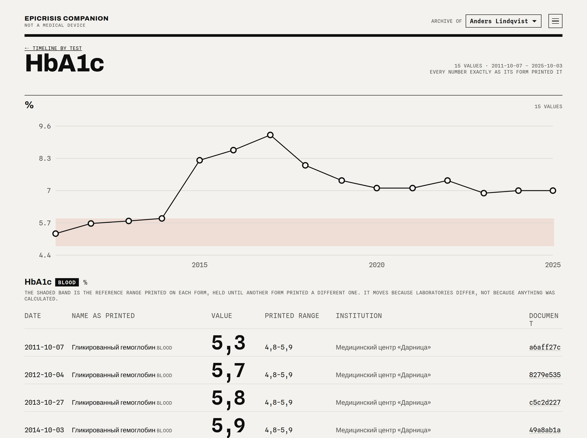

The whole medical file, read once. Every value one click from its page.
Epicrisis turns scanned medical records in five languages into a structured archive that
runs on your own servers. Your underwriter sees the full history of a case in one place, can question
it through an AI assistant, and every answer points back to the scan.
The archive shows what the documents say. Your people decide.

Demo data, invented patient. Fifteen values of one test over fifteen years: Russian forms
first, English after he moved. The shaded band is the range printed on each form, nothing
recalculated. The first value above it has a date, a laboratory and a scan behind it.
01 What the underwriter gets
One timeline per test across laboratories, countries and languages. Units are kept as
printed; mg/dL and µmol/L never land on one chart.
When it started. The first value outside the printed range, dated and linked to its
form — the question behind every pre-existing condition review.
Checks with no model at all: the same result filed three times, a stored number that
differs from the print, a date nobody could read.
Plain-language questions through Claude or ChatGPT (MCP). Read-only. Each answer carries
file, page and date.
02 Why it fits an insurer
Inside your perimeter. Self-hosted, no vendor cloud, no telemetry. Model calls go out
with your own key, one document per call, or not at all.
One archive per case, isolated by construction. Cases never mix.
Evidence, not verdicts. It extracts and cites; it does not score, price or decide. Under
the EU AI Act, AI for risk assessment and pricing in life and health insurance is high-risk.
Scoring stays with your team.
Source-available. Your IT and compliance read every line before it is installed; a
commercial licence covers running it. Nothing is hidden and nothing is free-riding.
01
Medical underwriting
A full case history before the decision,
not a stack of PDFs.
02
Claims and pre-existing conditions
When a value first left range,
against the policy start date.
03
Post-issue review
Contestability and audit work with the page
behind every number.
04
Cross-border cases
IPMI, assistance and expat files in RU, UK,
EN, ES and EL.
2
Real archives tested on
500+
Documents
5,000+
Values as printed
1989–2026
Years covered
200+
Institutions · 5 languages
Looking for two or three underwriting or claims teams for a pilot.
Your own files, on your own server. We learn what your reviewers actually need; you keep
everything. A data processing agreement under Article 28 GDPR comes with the licence.